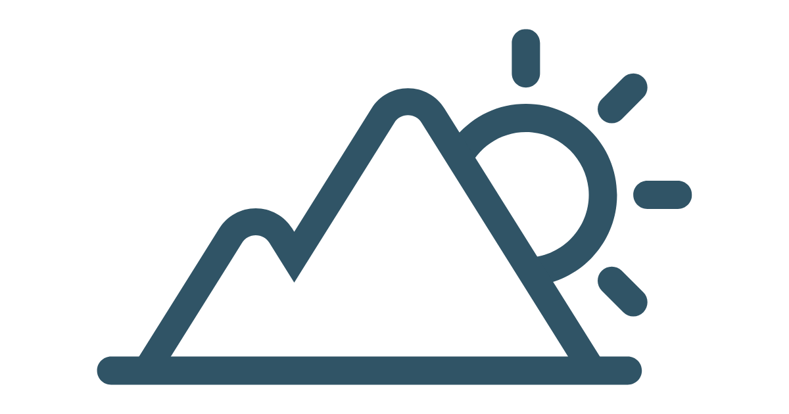
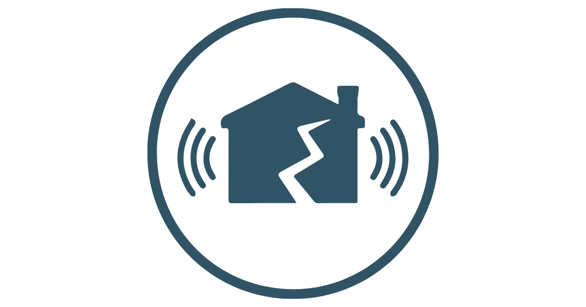
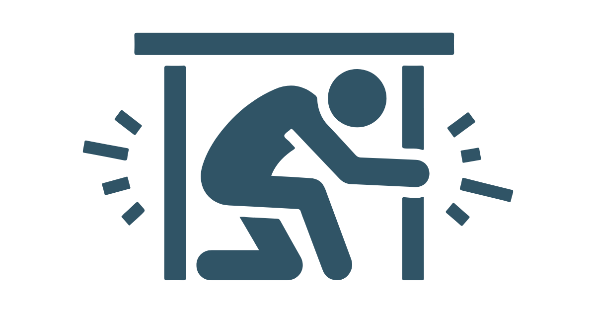

Bencana di Sesar Lembang
Pendidikan Geografi FPIPS UPI
Pendidikan Geografi FPIPS UPI
Informasi mengenai sebaran tingkat bahaya longsor dan gempa bumi di wilayah dilalui Sesar Lembang
Latar belakang: Foto oleh Tyasnastitip (CC BY-SA 4.0 via Wikimedia Commons)
Sesar Lembang adalah patahan aktif yang terletak di utara Kota Bandung, Jawa Barat, memanjang dari wilayah Padalarang hingga sekitar Gunung Manglayang dengan panjang sekiritar ±29 km. Sesar ini menjadi salah satu sumber potensi gempa bumi utama di kawasan Bandung Raya.

Sesar Lembang memiliki potensi bencana yang cukup tinggi karena merupakan sesar aktif dan berada sangat dekat dengan kawasan padat penduduk di Bandung Raya. Jika terjadi pergerakan sesar yang signifikan, dampaknya dapat dirasakan di Kota Bandung, Cimahi, Kabupaten Bandung Barat, hingga sebagian Sumedang.
Kesiapsiagaan bencana bertujuan meminimalkan risiko dan dampak bencana melalui perencanaan, edukasi, serta penyediaan sarana pendukung yang memadai. Langkah ini membantu masyarakat bertindak cepat dan tepat saat bencana terjadi.

Mitigasi bencana merupakan langkah krusial yang perlu diimplementasikan ketika bencana datang. Mitigasi bencana memiliki perbedaan di setiap jenis bencananya, hal ini menjadi tugas masyarakat untuk mengetahui dan mampu melaksanakannya.
Sesar Lembang adalah patahan aktif yang terletak di utara Kota Bandung, Jawa Barat, memanjang dari wilayah Padalarang hingga sekitar Gunung Manglayang dengan panjang sekitar ±29 km. Sesar ini menjadi salah satu sumber potensi gempa bumi utama di kawasan Bandung Raya. Sesar Lembang terbentuk akibat aktivitas tektonik di Pulau Jawa yang dipengaruhi oleh pergerakan Lempeng Indo-Australia dan Lempeng Eurasia. Tekanan tektonik tersebut menyebabkan kerak bumi mengalami retakan dan pergeseran di wilayah Bandung bagian utara. Secara geologi, sesar ini diperkirakan mulai aktif sejak ribuan hingga ratusan ribu tahun lalu. Aktivitasnya berkaitan dengan perkembangan Cekungan Bandung purba setelah letusan besar Gunung Sunda purba.
Sesar Lembang termasuk jenis sesar geser (strike-slip fault) dengan komponen
pergerakan vertikal. Bagian utara relatif bergerak naik dibandingkan bagian
selatan. Akibat aktivitas tersebut, terbentuk tebing memanjang yang masih dapat
dilihat di kawasan Lembang. Penelitian menunjukkan bahwa Sesar Lembang masih aktif hingga saat ini. Berdasarkan kajian geologi dan paleoseismologi:
Sesar Lembang memiliki potensi bencana yang cukup tinggi karena merupakan sesar aktif dan berada sangat dekat dengan kawasan padat penduduk di Bandung Raya. Jika terjadi pergerakan sesar yang signifikan, dampaknya dapat dirasakan di
Kota Bandung, Cimahi, Kabupaten Bandung Barat, hingga sebagian Sumedang.
Gempa Bumi Tektonik
Potensi utama dari Sesar Lembang adalah gempa bumi tektonik. Aktivitas pergeseran batuan di sepanjang sesar dapat
melepaskan energi dan menimbulkan guncangan gempa.
Mitigasi Bencana tergantung pada setiap jenis bencana yang terjadi. Pada mitigasi bencana longsor dan gempa Bumi
di sekitar Sesar Lembang pun memiliki variasi bentuk mitigasi. Berikut merupakan bentuk mitigasi dari bencana:
Gempa Bumi Tektonik